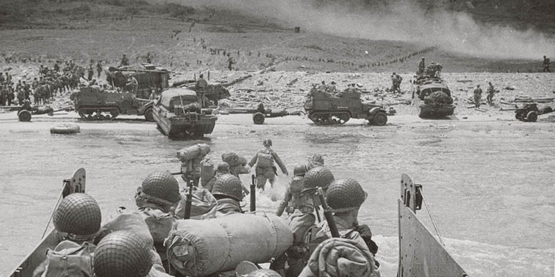
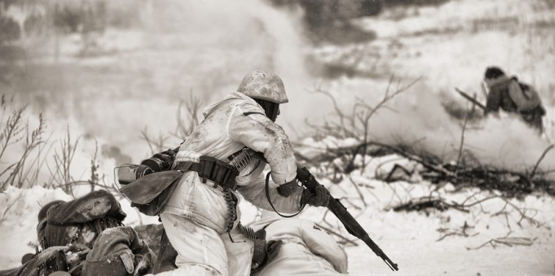
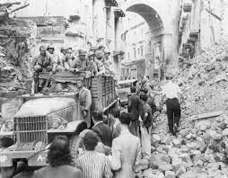
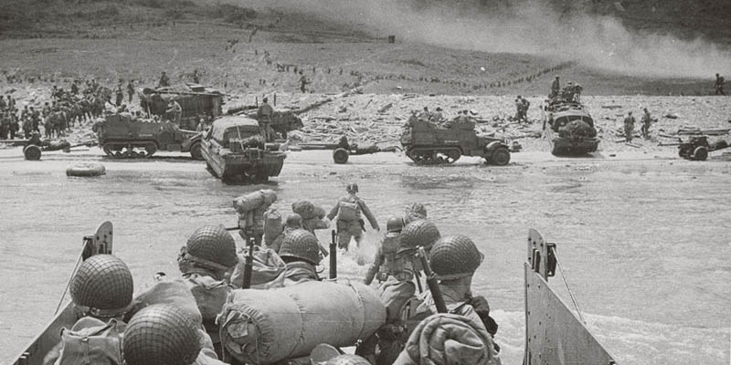
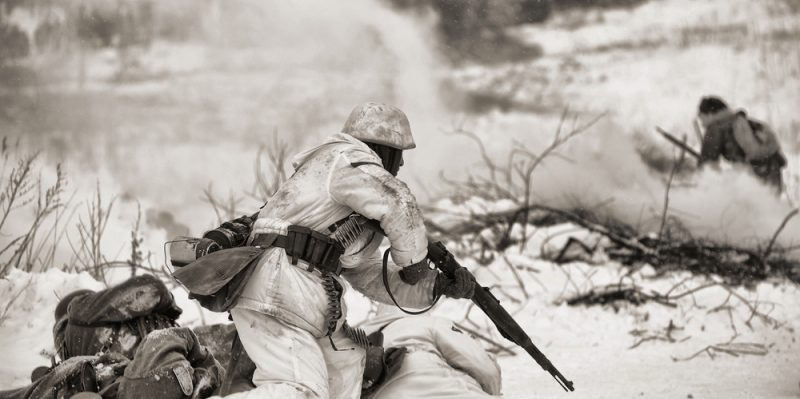
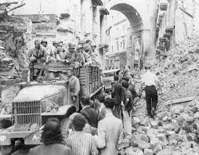
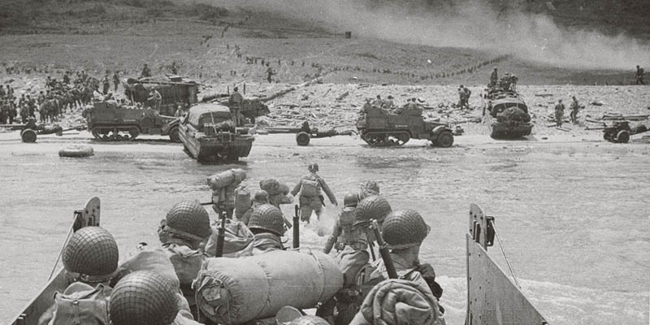
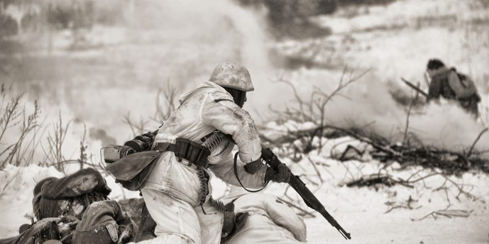
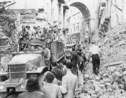

Fue un suceso historico muy caotico que ocasiono miles le muertes que no solo fueron muertes si no se puede comparar a la tortura y que dejo un gran antes y un despues en la historia de la humanidad.
Cuando sucedio esto se crearon organizaciones, reglas para evitar que este suceso vuelva a ocurrir, en este documento narare lo sucedido.
Antes de eso mostrare imagenes de la Segunda Guerra Mundial:



Fue el conflicto bélico más importante del siglo XX. Entre 1939 y 1945, Europa vivió el enfrentamiento de dos grandes alianzas: las potencias del Eje, con Alemania, Italia y Japón como principales protagonistas, y los Aliados, con Estados Unidos, Reino Unido, Francia y Rusia, entre otros. Desde el comienzo de la guerra con la invasión de Polonia y las posteriores guerras relámpago desarrolladas por los nazis hasta el Día de la Victoria, tuvieron lugar batallas de relevancia como Dunkerque, Stalingrado, Iwo Jima o Berlín, así como asesinatos masivos como el Holocausto o el bombardeo de Hiroshima y Nagasaki. La pérdida en vidas humanas se cifra entre 50 y 70 millones de personas, al tiempo que el Viejo Continente quedó dividido en dos bloques antagónicos. Descubre cómo la mayor alianza militar de la historia fue capaz de frenar el ascenso del nazismo y el fascismo y aprende más sobre personajes decisivos como Churchill, Stalin, Hitler, Mussolini o Goebbels.
Segunda Guerra Mundial
10/Noviembre/2023|Sergio Yahir Elizondo Cuellar